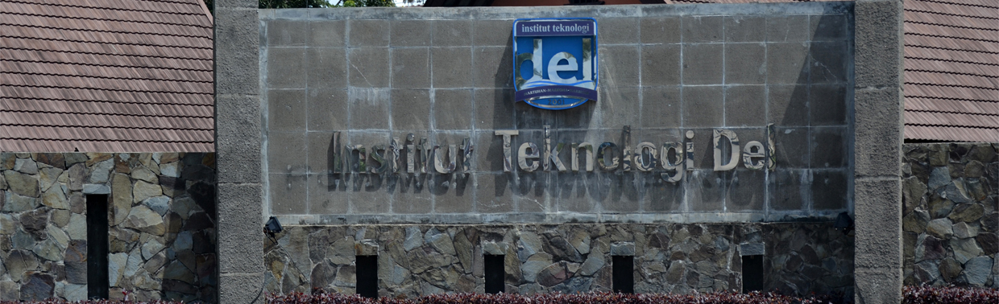
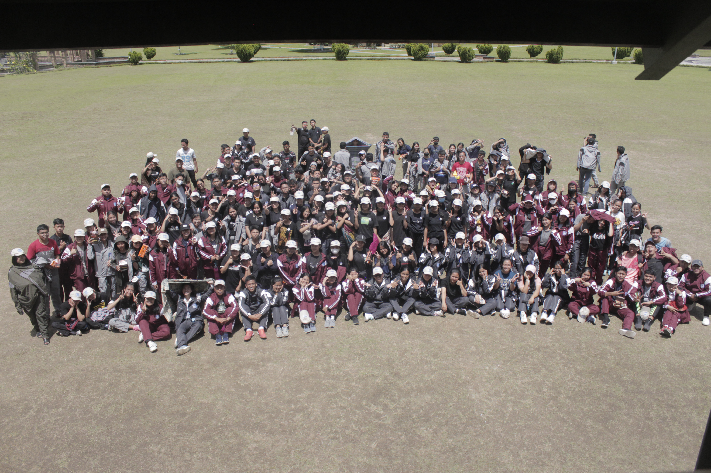

Riwayat Pendidikan

Saya adalah seseorang yang tamat dari SMA Negeri 2 Balige, sebelum mengecap pendidikan di SMA Negeri 2 Balige saya sebelumnya bersekolah di
SMP Swasta Budi Dharma Balige dan Sekolah Dasar di SD Negeri 173522 Balige. Sekarang saya sedang berkuliah di Insitut Teknologi Del program
studi Sarjana Sistem Informasi, Fakultas Informatika dan Teknik Elektro. Saya berharap akan lulus tepat waktu pada tahun 2025.
Portofolio
Berikut adalah beberapa hal yang saya lakukan selama masa perkuliahan saya di Institut Teknologi Del, kegiatan di bawah bersifat akademik dan non akademik.
Data Analyst Academy X Kampus Merdeka
Saya suka terjun ke dalam bidang data dan semua yang berkaitan dengan data, saya sudah mengerjakan beberapa proyek terkait data seperti
data analisis dan kecerdasan buatan. Saya juga merupakan seorang lulusan studi independen bersertifikat dari Kampus Merdeka X Cybertrend Data Academy
dengan role Data Analyst. Pada kegiatan pembelajaran tersebut, kami menggunakan Tableau untuk melakukan visualisasi data, kami juga belajar bagaimana
cara menggunakan SQL dan Python sebagai bahasa pemrograman untuk menganalisis data.
Ketua Himpunan Mahasiswa Sistem Informasi IT Del

Memimpin adalah hal yang menyenangkan bagi saya, beberapa kali saya terpilih menjadi pemimpin dalam suatu organisasi, misalnya sebagai ketua kelas,
ketua angkatan, kepala divisi acara KPU IT DEL, dan yang sekarang saya jalani adalah Ketua Himpunan Mahasiswa Sistem Informasi Institut Teknologi Del.
Menjadi seorang pemimpin bukan berarti menjadi seorang diktator yang mendikte bawahannya, tapi menjadi seseorang yang tau apa yang baik dilakukan dan
bisa merangkul para anggotanya untuk melakukan hal yang sudah ditargetkan sebelumnya.